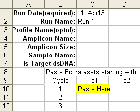

Manual data import assumes that each workbook encompasses an entire run. However, a run can still be split into across multiple Excel workbooks, but the program will display the data within each workbook dataset as an individual run. In practice, this is not a problem, as the sorting panel allows data across multiple runs to be exported as a single unit.
Note that Excel 2003 has a limit of 182 Fc datasets and that the template does not allow Ct and Ft values to be imported; well position and amplicon Tm are also not imported. Also note that calibration profiles must be imported separately using the calibration profile template.
To open an empty Excel template, go to the Import menu and select "Create a Sample Import Template". A file dialog box will appear asking for a name and a location for the resulting Excel file. Once a file has be designated, Excel should automatically open to display the sample import template:

Enter the Run date in C1, if the default date is not correct, along with a Run name. Note that although the Run date and FC readings cannot be changed following data import, all of the other values can be manually edited on within the program. Note also that if the amplicon size is left blank, the program will attempt to retrieve the amplicon size from the amplicon database, assuming one is open. If not, the amplicon size will be set to zero.
Each profile FC dataset is entered vertically starting at C10, along with the amplicon name, amplicon size and sample name in rows 4-6 respectively for each profile. These should be the raw fluorescence readings (i.e. not background subtracted), in order to avoid the instrument's software from modifying the fluorescence readings, which is a known issue for the MX3000P. Nevertheless, the program will accept background subtracted FC datasets if this is deemed necessary.
The default strandedness of the target is single stranded. This can be changed to double stranded by putting "Yes" in row 7. If left blank the default single stranded will be applied.
SAVE THE FILE.
To initiate data import go to the Import menu and select "Manually Import Sample Profiles".